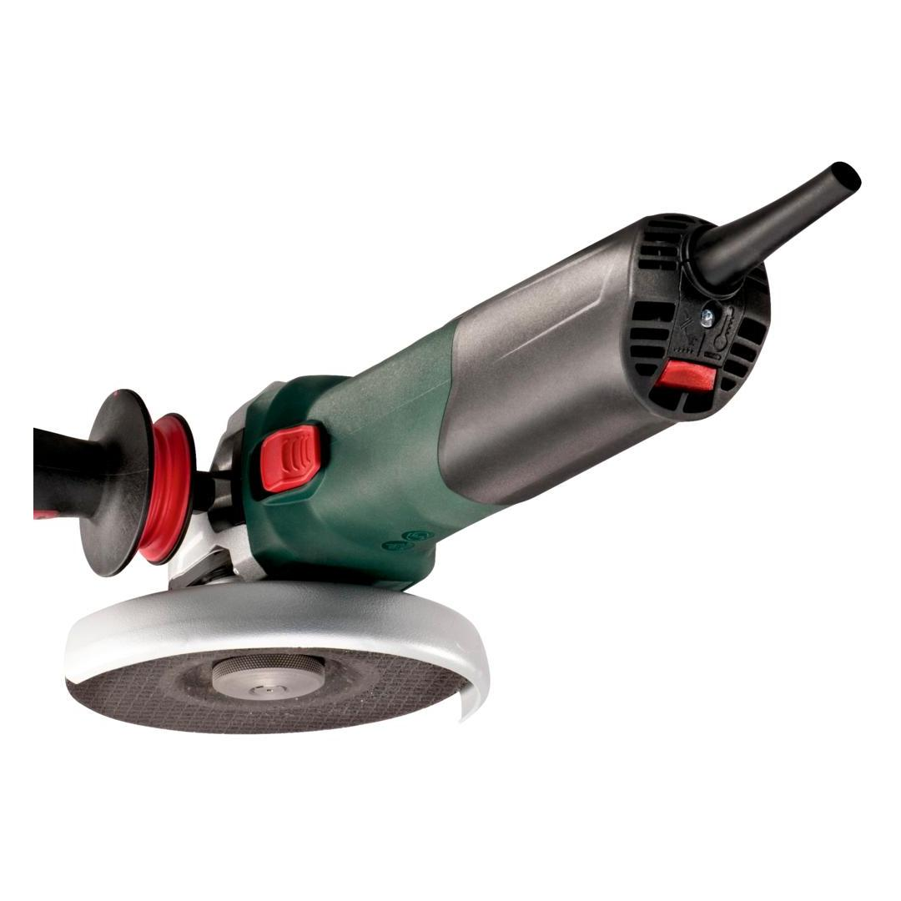
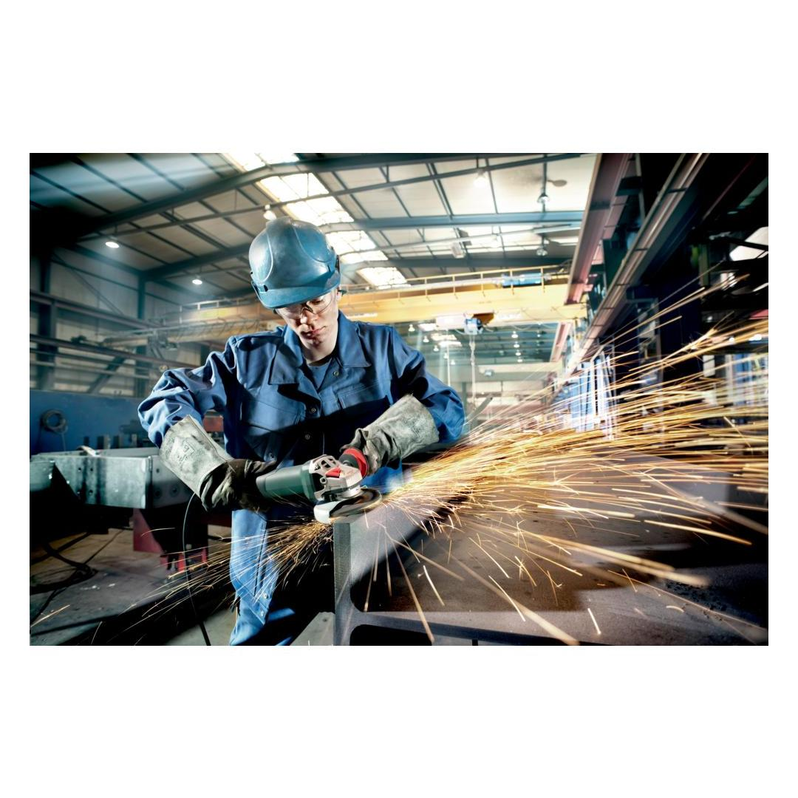
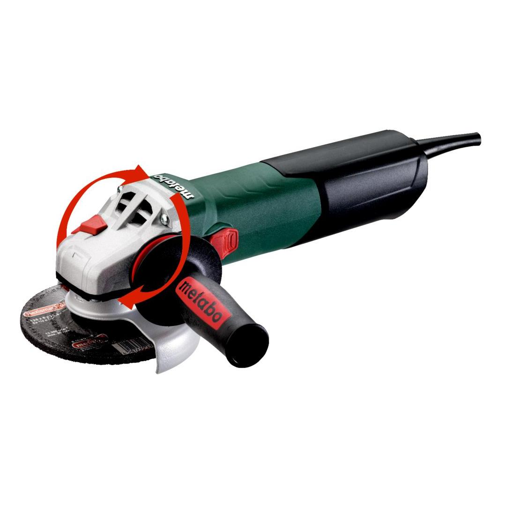
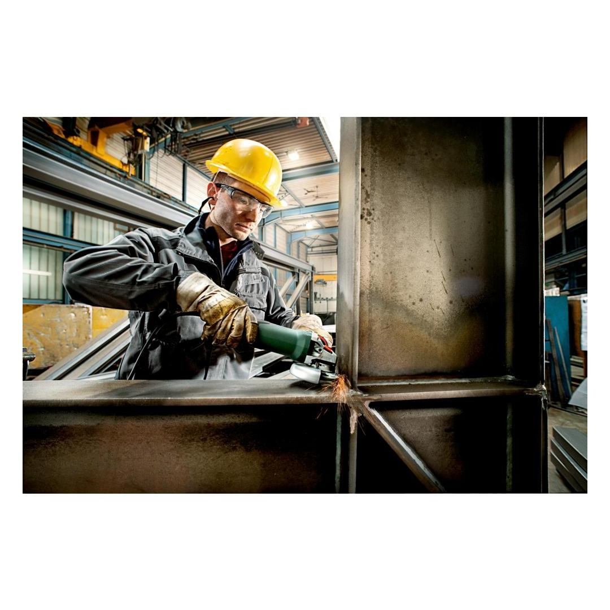
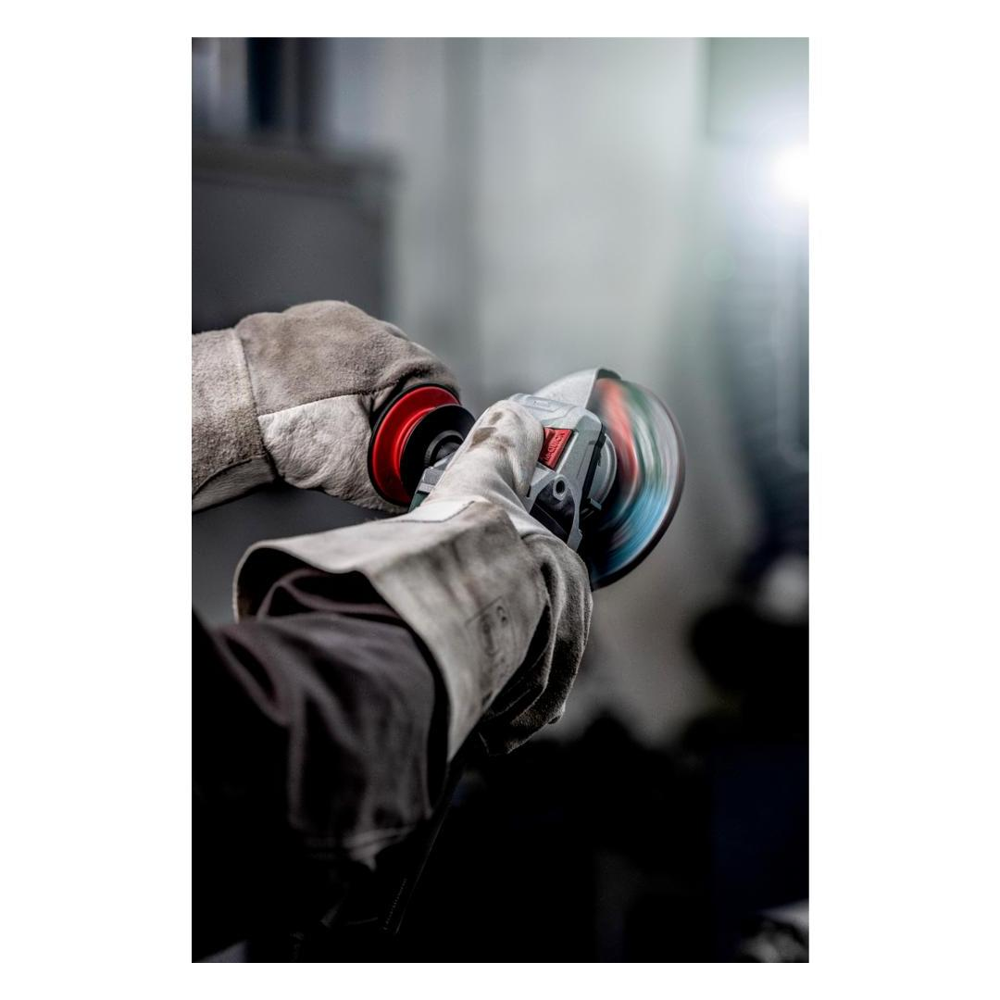

Metabo | Angle Grinder, Marathon Motor, Safety Clutch! Soft Start
600534000









| Disc-Ø | 125 mm // 5 " |
| Rated input power | 1700 W |
| No-load speed | 11000 rpm |
| Torque | 3.7 Nm / 33 in-lbs |
Product Description
- Maximum productivity: 1,700 Watt angle grinder with the power of a large grinder and the compactness of a small one for quickest material removal on industrial applications
- Longer service life, more power: the Metabo Marathon-motor with patented dust protection, up to 20% more overload capacity and 50% more torque
- Tacho Constamatic (TC) Full-wave Electronics: fast work progress by means of constant speed under load
- Tool free, fast disc change at the touch of a button with the Metabo M-Quick-System
- Tool-free adjustable guard; twist-proof
- Low-vibration side handle Metabo VibraTech (MVT)
- Best anti-vibration system: integrated auto-balancer for up to 50% less hand-arm vibrations, longer service life of the machine and up to twice the service life of the grinding wheels
- Metabo S-automatic mechanical safety clutch: minimises kick-back to the lowest level when the disc jams unexpectedly - for maximum user safety and swift progress
- Electronic overload protection, soft start and restart protection
- Gear housing can be unscrewed, rotated in 90° steps and remounted for left-handed operation or cutting
- Auto-stop carbon brushes to protect the motor
Product Highlights
Metabo Marathon-motorMetabo Marathon-motor
with patented dust protection for long service life
play video Tacho-Constamatic (TC)-Full Wave ElectronicsTacho-Constamatic (TC)-Full Wave Electronics
fast work progress by means of constant speed under load
Electronic soft startElectronic soft start
for smooth start-up
Metabo S-automatic safety clutchMetabo S-automatic safety clutch
mechanical decoupling of the drive for safe working should the tool stop unexpectedly
play video Restart protectionRestart protection
prevents unintentional start-up after power supply interruption
Metabo VibraTech (MVT)Metabo VibraTech (MVT)
vibration damping for convenient continuous mode
Metabo "Quick" quick tool changeMetabo "Quick" quick tool change
without key - quick, comfortable and safe
play video Auto-balancerAuto-balancer
For minimal hand/arm vibrations and extended service life of grinding wheels and machine
play videoTechnical Details
KEY FIGURES| Disc-Ø | 125 mm // 5 " |
| Rated input power | 1700 W |
| Output power | 1040 W |
| No-load speed | 11000 rpm |
| Speed at rated load | 11000 rpm |
| Torque | 3.7 Nm / 33 in-lbs |
| Spindle thread | M 14 |
| Handle circumference | 206 mm / 8 1/8 " |
| Weight (without power cable) | 2.5 kg / 5.5 lbs |
| Cable length | 4 m / 13 ft |
VIBRATION| Surface grinding | 4 m/s² |
| Uncertainty of measurement K | 1.5 m/s² |
| Grinding with sandpaper | 3 m/s² |
| Uncertainty of measurement K | 1.5 m/s² |
NOISE EMISSION| Sound pressure level | 96 dB(A) |
| Sound power level (LwA) | 104 dB(A) |
| Uncertainty of measurement K | 3 dB(A) |
Scope of delivery
| Guard |
| Inner support flange |
| M-Quick flange nut |
| Metabo VibraTech (MVT) side handle |